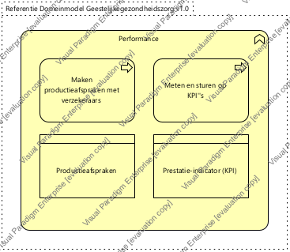

|
|
|
Generieke architectuur : Model . Architectuur : Package . Business architectuur : Package . Geestelijke gezondheidszorg : Package . Zorgprocessen - Geestelijke gezondheidszorg : Package
 ArchiMate Diagram - Sturing en verantwoording - Performance (GGz)
ArchiMate Diagram - Sturing en verantwoording - Performance (GGz)
 link
link
| Jump to: |
|  |
| Dit domein bevat de activiteiten die betrekking hebben op het maken, meten en sturen op performance indicatoren. |